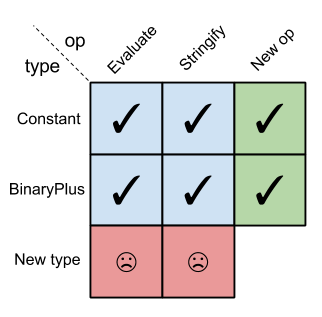

My previous post discussed the Expression Problem and presented code in several languages to demonstrate the issue and some solutions. Haskell was used as the poster boy for functional languages which suffer from the problem in one of its dimensions (particularly - it being easy to add new functions but not new types).
In comments to that post (and other comments made online) it was pointed out that using typeclasses could help solve or alleviate the problem in Haskell, and I want to fix any misconceptions by pursuing this approach right now. While typeclasses can help work around some issues related to the Expression Problem, they don't provide a complete solution - at least not in the way usually presented in online tutorials. For a more complete solution, we'll going to dig a bit deeper.
A quick recap
The Expression Problem in Haskell can be demonstrated with the following code:
data Expr = Constant Double
| BinaryPlus Expr Expr
stringify :: Expr -> String
stringify (Constant c) = show c
stringify (BinaryPlus lhs rhs) = stringify lhs
++ " + "
++ stringify rhs
evaluate :: Expr -> Double
evaluate (Constant c) = c
evaluate (BinaryPlus lhs rhs) = evaluate lhs + evaluate rhs
While it's easy to add new functions (for example typecheck) without modifying existing code, the same cannot be said of new expression types. If we add a new type - say BinaryMul, we'll have to modify a whole bunch of existing code - the definitions of stringify and evaluate (and typecheck if we already had it).
Typeclasses to the rescue
The following shows how to "solve" the aforementioned issue with typeclasses. The word "solve" is in quotes for a reason - this is not a complete solution, as we shall soon see. And yet, this is the most common solution you will find online, so I wanted to inspect it in detail before we go deeper.
We start by definiting the data types for different nodes:
data Constant = Constant Double deriving (Show)
data BinaryPlus lhs rhs = BinaryPlus lhs rhs deriving (Show)
They are separate now, and not variants of the same data. Having all nodes under the same data created the expression problem in the first place, because we had to update the pattern matching rules in every function whenever a new type is added.
We tie them together with an empty typeclass [1]:
class Expr e
instance Expr Constant
instance (Expr lhs, Expr rhs) => Expr (BinaryPlus lhs rhs)
So now, even though Constant and BinaryPlus are completely different data types, they are both instances of Expr, which provides a unification point by letting functions and other classes require an Expr-implementing type in parameters, etc.
Let's implement evaluation for these expressions:
class (Expr e) => Eval e where
evaluate :: e -> Double
instance Eval Constant where
evaluate (Constant x) = x
instance (Eval lhs, Eval rhs) => Eval (BinaryPlus lhs rhs) where
evaluate (BinaryPlus lhsx rhsx) = evaluate lhsx + evaluate rhsx
Now we can do this from a terminal:
> let e = BinaryPlus (Constant 1.1) (Constant 2.2)
> evaluate e
3.3000000000000003
Adding new functions is fairly easy:
class (Expr e) => Stringify e where
stringify :: e -> String
instance Stringify Constant where
stringify (Constant x) = show x
instance (Stringify lhs, Stringify rhs) => Stringify (BinaryPlus lhs rhs) where
stringify (BinaryPlus lhsx rhsx) = printf "(%s + %s)"
(stringify lhsx) (stringify rhsx)
As before, we didn't have to modify any of the existing code to add this, so that's good. What about new types though, will it be easier this time? Let's add a BinaryMul node:
data BinaryMul lhs rhs = BinaryMul lhs rhs deriving (Show)
instance (Expr lhs, Expr rhs) => Expr (BinaryMul lhs rhs)
instance (Eval lhs, Eval rhs) => Eval (BinaryMul lhs rhs) where
evaluate (BinaryMul lhsx rhsx) = evaluate lhsx * evaluate rhsx
instance (Stringify lhs, Stringify rhs) => Stringify (BinaryMul lhs rhs) where
stringify (BinaryMul lhsx rhsx) = printf "(%s * %s)"
(stringify lhsx) (stringify rhsx)
Taking it for a ride:
> let d = BinaryMul (Constant 2.0) (BinaryPlus (Constant 2.0) (Constant 0.5))
> evaluate d
5.0
> stringify d
"(2.0 * (2.0 + 0.5))"
It works! And note that we didn't have to modify any existing code to add a new type - instance definitions live outside their original class, so they can be defined for new types without touching existing code (not unlike the Clojure multimethods discussed in the original post).
So this is it! Problem solved, right? Well, no. It does seem like we've managed to add both a new function and a new type without modifying existing code, but if we think about it a bit deeper - there's a huge problem lurking here. Can you figure it out?
Alright, a hint. Imagine you want to write a function that parses a string and produces an expression. What would the type of this function be? Specifically, what is its return type?
When we split up Constant and BinaryPlus to different data types, we gained the ability to sidestep the expression problem, but we lost something valuable too - the ability to unify them under a single type. No, a parsing function cannot return Expr - Expr is not a type, it's a type class. Here's a slightly different demonstration:
> let x = 20
> let k = if x > 4 then (Constant 2.2) else (BinaryPlus (Constant 5.5) (Constant 2.1))
<interactive>:43:44:
Couldn't match expected type `Constant'
with actual type `BinaryPlus Constant Constant'
In the return type of a call of `BinaryPlus'
In the expression: (BinaryPlus (Constant 5.5) (Constant 2.1))
In the expression:
if x > 4 then
(Constant 2.2)
else
(BinaryPlus (Constant 5.5) (Constant 2.1))
Haskell won't have it. The type of k can be inferred to either Constant or BinaryPlus, but this has to be done at compile-time. This expression tries to flip the type based on a run-time value, and that just isn't possible [2].
To make this work, we'll need to rethink our data declarations again, attempting to unify different expression in a way that a single type can be returned from functions. This complicates the code considerably, so take a deep breath before reading on.
Combining type constructors
Disclaimer: the following is my exposition of the first part of Wouter Swierstra's paper "Data types a la carte". I'm also indebted to Bartosz Milewski for discussing the problem mentioned above with me and his kind suggestion to read this paper.
The last section ended with a problem - how to combine the different expression types in a way that we could use a single type to refer to them? One idea that can come to mind is using something like Either. Here's a conditional assignment similar to the one shown before:
> let k = if x > 4 then Left "Foo" else Right 20
> :t k
k :: Either [Char] Integer
However, using Either directly presents some immediate challenges:
- Either expects concrete types, not type constructors. Its kind is * -> * -> *. Our expression types, like BinaryPlus, are type constructors (they accept type arguments).
- Either supports two types - but we may need many more (a realistic case would have dozens of expression types).
So we're not going to be using Either itself, but rather are going to keep it in mind as inspiration.
In fact, we're going to start with something similar, by defining this type:
data ET f g e = El (f e) | Er (g e)
It's a bit like Either, just for type constructors. It takes three parameters: f and g are type constructors, and e is a type that can be passed to these type constructors. ET "unifies" them in a way similar to Either. In the paper, Swierstra refers to ET as the coproduct of the signatures of f and g.
But how do such type constructors look? Here comes the tricky part, so get some paper and think this through:
data Expr f = In (f (Expr f))
Yes, this is a recursive type declaration. Note that both Expr and f are type constructors here; f takes a type parameter corresponding to the expressions that occur as the subtrees of constructors.
Let's get to the more concrete types. Here are some of the familiar expression node types:
data Constant e = Constant Double
data BinaryPlus e = BinaryPlus e e
data BinaryMul e = BinaryMul e e
Note that:
- They are separate types, not under the same data declaration. Recall that this part is important for solving the expression problem. This led to another problem in the previous section, but we'll soon see how the clever Expr shown here will help us overcome it.
- They all accept a type parameter e; this is in preparation for making them more generic in the sense of Expr f.
These types can be made instances of Functor so that we can map things over them in a uniform way:
instance Functor Constant where
fmap f (Constant x) = Constant x
instance Functor BinaryPlus where
fmap f (BinaryPlus e1 e2) = BinaryPlus (f e1) (f e2)
instance Functor BinaryMul where
fmap f (BinaryMul e1 e2) = BinaryMul (f e1) (f e2)
Importantly, the coproduct ET is also a Functor:
instance (Functor f, Functor g) => Functor (ET f g) where
fmap f (El e1) = El (fmap f e1)
fmap f (Er e2) = Er (fmap f e2)
Another important piece of the puzzle is foldExpr, which lets us perform a fold on an expression:
foldExpr :: Functor f => (f a -> a) -> Expr f -> a
foldExpr f (In t) = f (fmap (foldExpr f) t)
foldExpr takes a function that extracts the value from inside a functor, and an Expr. It uses fmap to recursively extract a value from the contained type. This is getting a bit complicated - an example will soon help clarify things.
Finally, we're ready to define some operations on these expressions. Let's start with evaluate:
class Functor f => Eval f where
evalFunctor :: f Double -> Double
instance Eval Constant where
evalFunctor (Constant x) = x
instance Eval BinaryPlus where
evalFunctor (BinaryPlus x y) = x + y
instance Eval BinaryMul where
evalFunctor (BinaryMul x y) = x * y
instance (Eval f, Eval g) => Eval (ET f g) where
evalFunctor (El x) = evalFunctor x
evalFunctor (Er y) = evalFunctor y
evaluate :: Eval f => Expr f -> Double
evaluate expr = foldExpr evalFunctor expr
First, Eval is a typeclass that supports the evalFunctor function which produces a Double from an expression. Instances for our data types are trivial, and the instance for ET simply propagates left or right based on the combinator's contents.
We're ready for an example. Let's start by defining a type that unifies all our three existing expression types:
type GeneralExpr = Expr (ET Constant (ET BinaryPlus BinaryMul))
This simply builds a binary tree of types; think of Either again - this is like the variable-length version of Either, just for types. Here's how it looks:
ET
/ \
/ \
/ \
Constant ET
/ \
/ \
/ BinaryMul
/
BinaryPlus
As an example, we can define a simple constant and evaluate it as follows:
> let x = In(El(Constant 7.0)) :: GeneralExpr
> evaluate x
7.0
Do you see why x is defined the way it is? We just follow the tree; one step left (El) and we get to Constant; then wrap it in In to make it an Expr, done. Now, what happens when evaluate x is called? Let's trace it through:
-> evaluate x
... x is of type GeneralExpr, so it's an Expr, and also satisfies Eval because
... there's an instance of Eval for ET
-> foldExpr evalFunctor x
-> evalFunctor (fmap (foldExpr evalFunctor) (El(Constant 7.0)))
... first, this fmap-s something on El(Constant 7.0); looking up the fmap
... definition for ET, this turns into El(fmap <...> (Constant 7.0))
-> evalFunctor El(fmap (foldExpr evalFunctor) (Constant 7.0))
... but fmap-ing anything onto Constant just produces that Constant, so:
-> evalFunctor El(Constant 7.0)
... looking up the instance of Eval for ET, we see that for (El x) we invoke
... evalFunctor x
-> evalFunctor(Constant 7.0)
... and finally, for evalFunctor (Constant x) the answer is x
-> 7.0
Now let's define a more complicated expression:
> let y = In(El(Constant 2.0)) :: GeneralExpr
> let mulXY = In(Er(Er(BinaryMul x y))) :: GeneralExpr
> let addXmulXY = In(Er(El(BinaryPlus x mulXY))) :: GeneralExpr
> evaluate addXmulXY -- note: this does "x + xy"
21.0
It may take longer, but it should be fairly straightforward to trace through this evaluate similarly to the simpler case above. I recommend it as an exercise! Pay special attention to how BinaryPlus and BinaryMul nodes are created by picking the right path through the ET tree defined for GeneralExpr.
It's time to see how to add new functions to this solution. Let's add stringify; it's very straightforward now that we know how evaluate is done:
class Functor f => Stringify f where
stringifyFunctor :: f String -> String
instance Stringify Constant where
stringifyFunctor (Constant x) = show x
instance Stringify BinaryPlus where
stringifyFunctor (BinaryPlus x y) = "(" ++ x ++ " + " ++ y ++ ")"
instance Stringify BinaryMul where
stringifyFunctor (BinaryMul x y) = "(" ++ x ++ " * " ++ y ++ ")"
instance (Stringify f, Stringify g) => Stringify (ET f g) where
stringifyFunctor (El x) = stringifyFunctor x
stringifyFunctor (Er y) = stringifyFunctor y
stringify :: Stringify f => Expr f -> String
stringify expr = foldExpr stringifyFunctor expr
It follows exactly the same pattern, and of course no modification of existing code is required. Since our node types don't reside in a single data type, there's no pattern matching to update. The new functionality is provided by instances of the Stringify typeclass.
> stringify x
"7.0"
> stringify addXmulXY
"(7.0 + (7.0 * 2.0))"
Reflecting on the combinator technique
The technique presented in the previous section solves the expression problem. It also doesn't suffer from the problem with the simpler typeclass approach, because we now actually have Expr as a unifying type. To go back to the previous attempt to conditionally define a value of either type:
> let k = if p > 4 then x else addXYmulX
> :t k
k :: GeneralExpr
> evaluate k
7.0
w00t, it works! So now we can actually write a parser that will return GeneralExpr, with the actual node type determined at run-time.
Not everything is perfect, though. There are a couple of problems with this approach. First, it's really tedious to create expressions. Recall the sequence of temporary lets required to create the addXmulXY node, and these nestings of El and Er are quite tiresome.
Also, if we add more node types to our expression language, these definitions will get even more complicated because the ET tree will get deeper; and finally, the worst problem of all, we'd have to rewrite the existing code that creates expressions because the El / Er paths change. Note that we won't have to modify the definitions of existing nodes; nor will we have to modify the definitions of the existing functions like evaluate and stringify (only add instances for new types), so the expression problem isn't violated, strictly speaking.
There are a number of solutions possible for these problems, all of which make the code even more complicated (FWIW I find the existing approach of the recursive Expr definition pretty obtuse already). If you keep reading Swierstra's paper, section 4 discusses one mitigation by creating smarter constructors; it even goes as far as to veer off the Haskell 98 standard, requiring language extension support.
To be honest, I think this exploration went too far into the land of code complexity already. How bad is the expression problem really? Why is it such a taboo to modify existing code? Healthy code bases should be continously tended to and refactored, in my view, and there's nothing wrong with modifying existing code to generalize it. Sure, when the solution is as trivial as in Clojure, the cost of maintaining these invariants is fairly small. But the approach presented here for Haskell is so complex that I'd be careful about using it in real life. There's a cost-benefit analysis to be made here, and I'm not sure which way it would go.
| [1] | This typeclass is empty in the sense that it doesn't declare any methods that need to be implemented by instances. Therefore any type can be made an instance of this class just by declaring it as such. |
| [2] | Incidentally, Clojure's dynamic nature is precisely what makes this a non-problem in the Clojure multiple dispatch solution. Unlike Haskell, Clojure doesn't attempt to infer a compile-time type for every expression and values can hold different types at different times during execution. |
| [3] | By type constructor I mean a non-nullary type constructor. |